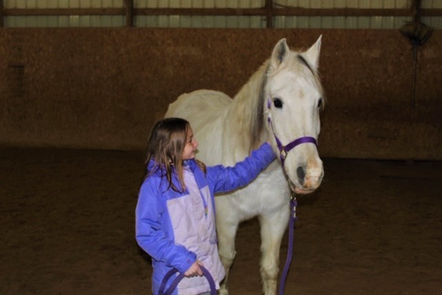
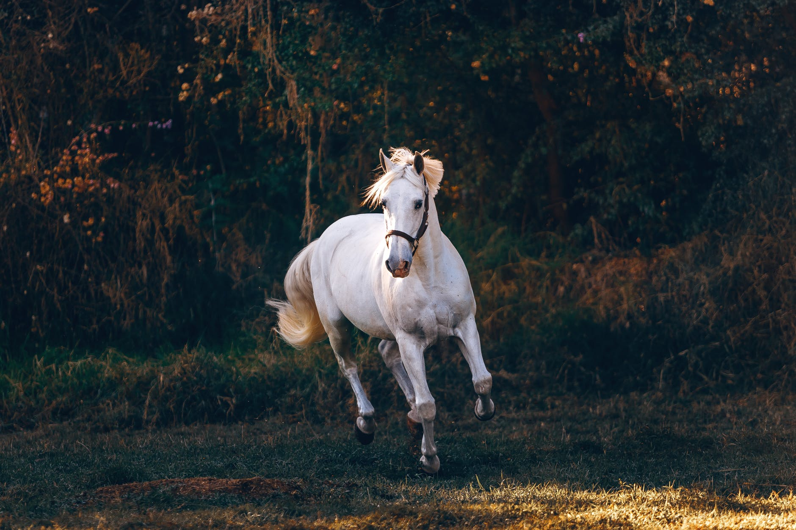

What is Equine Assisted Therapy?
Equine Therapy is an experiential therapy. This approach incorporates the use of horses in a collaborative manner to
assist with emotional growth and learning.

Who Could Benefit?
This form of therapy is used to treat a variety of mental health challenges including anxiety, depression, grief and
loss, communication needs, and PTSD
Why Horses?
Horses are used as these animals create an opportunity to develop confidence and overcome anxieties. Horses are very
social creatures with defined roles within their herds. As such, they are in tune with nonverbal cues and body language.
Horses are wonderful at mirroring a human’s feelings. This makes them very powerful in helping humans working with the
horse to confront who that human truly is. When a human struggling with anxiety, depression, or PTSD interacts with a
horse, the horse reflects to the human what the human is feeling. In order to get the horse to change, the human much
acknowledge that their feelings and actions are being reflected by the horse and change themselves in order to more
effectively work with the horse.
Horses are also naturally intimidating to others which provides a wonderful, natural opportunity for humans to overcome
fear and develop confidence. This helps humans learn the skills to deal with other challenging and fearful situations in
life.
